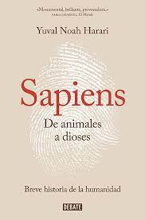

| PORTADA |
TITULO |
AUTOR |
SINOPSIS |
ENLACE DE DESCARGA |
|  |
Sapiens: De animales a dioses |
Yuval Noah Harari |
En este libro, Harari explora la historia de la humanidad, desde los primeros seres humanos en la Edad de Piedra hasta los desafíos actuales. Examina cómo las revoluciones cognitivas, agrícolas y científicas han dado forma a nuestra especie y plantea preguntas fascinantes sobre nuestro futuro. |
LEER |
 |
Guns, Germs, and Steel: The Fates of Human Societies |
Jared Diamond |
Diamond investiga por qué algunas sociedades se desarrollaron más que otras a lo largo de la historia. Examina cómo factores como la geografía, los recursos naturales y las enfermedades han influido en la dominación de ciertas culturas y cómo esto ha moldeado nuestro mundo actual. |
LEER |
| |
The Rise and Fall of the Third Reich |
William L. Shirer |
Shirer, periodista y testigo presencial de los eventos, relata la ascensión y caída del Tercer Reich nazi. Este libro ofrece un exhaustivo análisis de Adolf Hitler, su régimen y las circunstancias que llevaron a la Segunda Guerra Mundial y al Holocausto. |
LEER |
| |
A Short History of Nearly Everything |
Bill Bryson |
Bryson aborda la historia de la ciencia y explora los logros y descubrimientos que han dado forma a nuestro entendimiento del mundo. Desde el Big Bang hasta la evolución, Bryson presenta la ciencia de una manera accesible y entretenida, destacando a los científicos y sus contribuciones clave. |
LEER |
| |
The Diary of a Young Girl |
Anne Frank |
El diario de Anne Frank, una niña judía que vivió oculta durante la ocupación nazi en Ámsterdam, es una conmovedora crónica de la Segunda Guerra Mundial. A través de sus escritos, se obtiene una perspectiva íntima de la vida bajo la opresión y el deseo de Anne de preservar su humanidad en medio de la adversidad. |
LEER |